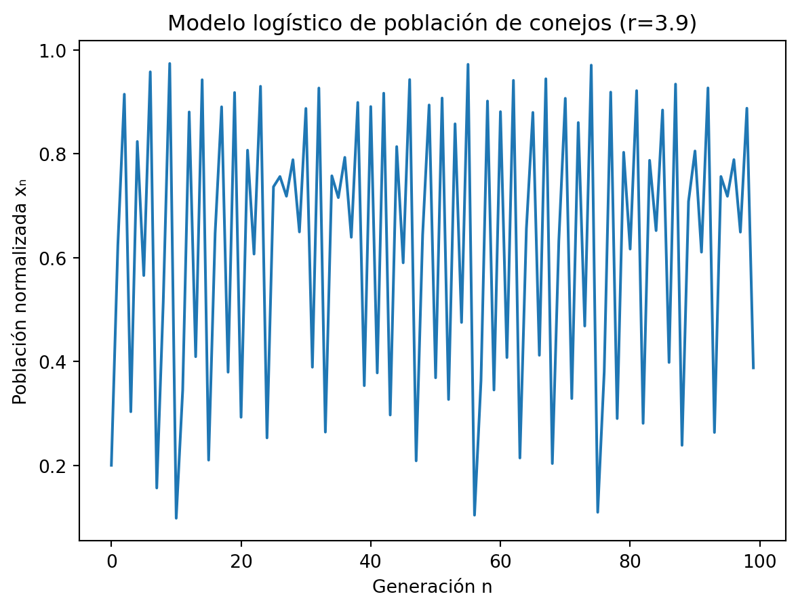
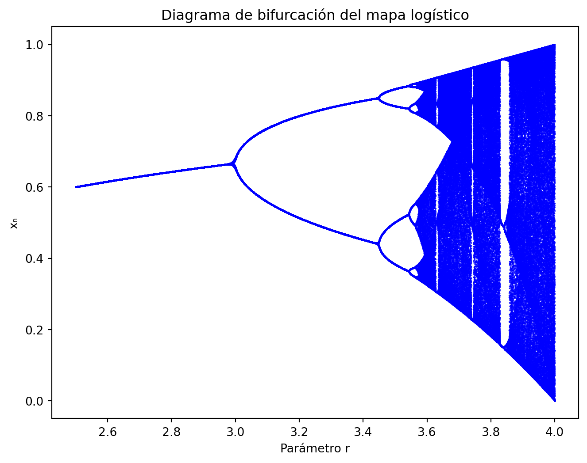

El modelo logístico discreto describe la evolución de una población que crece con una tasa limitada por la competencia interna.
La ecuación básica es:
x_{n+1} = r\,x_n(1 - x_n)
donde: - x_n: población normalizada (entre 0 y 1), - r: parámetro de crecimiento o tasa de reproducción, - x_{n+1}: población en el siguiente período.
Este modelo capta cómo una población aumenta rápidamente al principio, pero se estabiliza cuando se acerca al límite de recursos.
Fue propuesto originalmente por Pierre-François Verhulst (1845) y es un ejemplo clásico de modelo no lineal discreto.
6.2 Modelo logístico de la población de conejos
Supongamos una población de conejos en un ambiente con recursos limitados.
Si x_n representa la proporción de conejos respecto a la capacidad máxima del entorno y r es la tasa de crecimiento, la evolución está dada por:
x_{n+1} = r\,x_n(1 - x_n)
Este modelo genera distintos comportamientos dependiendo del valor de r: - Si r < 1: la población desaparece (tiende a 0). - Si 1 < r < 3: la población se estabiliza en un valor fijo. - Si 3 < r < 3.57: aparecen ciclos de período 2, 4, 8, etc. - Si r > 3.57: la población entra en caos.
6.3 Implementación en Python del modelo de conejos
import numpy as npimport matplotlib.pyplot as pltdef logistic_population(r, x0, n): x = np.zeros(n) x[0] = x0for i inrange(1, n): x[i] = r * x[i-1] * (1- x[i-1])return x# Parámetrosr =3.9x0 =0.2n =100x = logistic_population(r, x0, n)plt.plot(range(n), x, lw=1.5)plt.title(f"Modelo logístico de población de conejos (r={r})")plt.xlabel("Generación n")plt.ylabel("Población normalizada xₙ")plt.show()

Interpretación:
- Para (r=2.5), la población converge a un valor estable.
- Para (r=3.2), oscila entre dos niveles.
- Para (r=3.9), el comportamiento es caótico.
6.4 Evolución temporal y sensibilidad a las condiciones iniciales
El modelo presenta sensibilidad a las condiciones iniciales:
si (x_0 = 0.2000) y (x_0' = 0.2001), la diferencia entre ambas trayectorias puede crecer exponencialmente para valores altos de r.
Esta propiedad es una característica del caos determinista, donde el sistema sigue una regla exacta pero el resultado se vuelve impredecible.
6.5 Diagrama de telaraña (Cobweb plot)
El diagrama de telaraña permite visualizar gráficamente la evolución de la población:
Se dibuja la curva y = r\,x(1 - x) y la recta y = x.
Se parte desde un punto inicial x_0.
Se sube a la curva (para obtener x_1) y luego se proyecta a la recta identidad (para regresar al eje x).
Repitiendo el proceso se genera una figura que muestra cómo evoluciona la población.
Interpretación:
- Si el trazado converge al punto fijo, el sistema es estable.
- Si alterna entre varios valores, existe un ciclo periódico.
- Si no hay patrón repetido, el sistema es caótico.
6.6 Diagrama de bifurcación
El diagrama de bifurcación muestra el comportamiento de largo plazo de la ecuación logística al variar el parámetro r.
Para cada valor de r, se calculan muchas iteraciones y se grafican los valores finales de x_n.
r < 1: la población muere.
1 < r < 3: la población se estabiliza.
3 < r < 3.57: se duplican los períodos (2, 4, 8…).
r > 3.57: el sistema entra en caos.
La secuencia de duplicaciones de período obedece a la constante de Feigenbaum (\delta \approx 4.6692), que describe la relación entre los intervalos sucesivos de bifurcación.
def bifurcation(r_min=2.5, r_max=4.0, steps=3000, transient=200, plot_points=200): rs = np.linspace(r_min, r_max, steps) xs = [] rs_all = []for r in rs: x =0.5for _ inrange(transient): x = r * x * (1- x)for _ inrange(plot_points): x = r * x * (1- x) xs.append(x) rs_all.append(r) plt.figure(figsize=(8,6)) plt.scatter(rs_all, xs, s=0.1, color="blue") plt.title("Diagrama de bifurcación del mapa logístico") plt.xlabel("Parámetro r") plt.ylabel("xₙ") plt.show()bifurcation()

6.7 Ejemplos de comportamiento según el valor de r
Valor de r
Tipo de comportamiento
Descripción breve
2.5
Estable
Convergencia a punto fijo x^* = 1 - 1/r = 0.6.
3.2
Período 2
Alternancia entre dos valores.
3.5
Período 4 o 8
Ciclo de mayor complejidad.
3.9
Caótico
Trayectorias impredecibles y sensibles a x_0.
6.8 Relación con el algoritmo de Shor y periodicidad
El algoritmo de Shor (usado en computación cuántica para factorización) busca el período de una función modular:
f(a) = r^a \bmod N
donde N es el número a factorizar y r es una base coprima con N.
El algoritmo halla el período p tal que:
r^{p} \equiv 1 \pmod{N}
y usa esa periodicidad para obtener los factores primos de N.
De forma conceptual, esto se asemeja al comportamiento periódico del mapa logístico antes del caos: ambos sistemas repiten estados o patrones cada cierto número de iteraciones.
6.9 Resumen conceptual
La ecuación logística discreta modela crecimiento poblacional con saturación.
Al aumentar r, el sistema pasa de la estabilidad al caos.
El diagrama de bifurcación muestra esta transición por duplicaciones de período.
El diagrama de telaraña ilustra la convergencia, ciclos y caos.
El caos determinista aparece para valores altos de r, donde pequeñas variaciones iniciales producen grandes diferencias.
La búsqueda de periodicidad en sistemas como el logístico conecta con conceptos del algoritmo de Shor, que también se basa en la detección de períodos en funciones modulares.